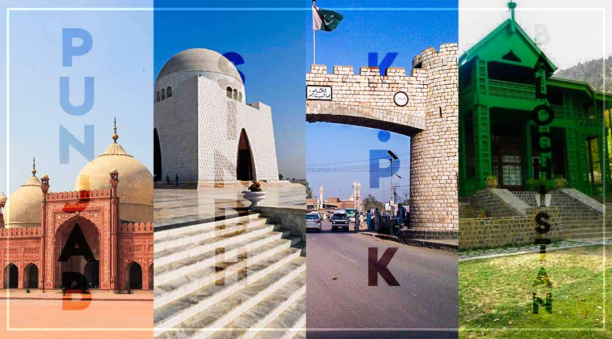
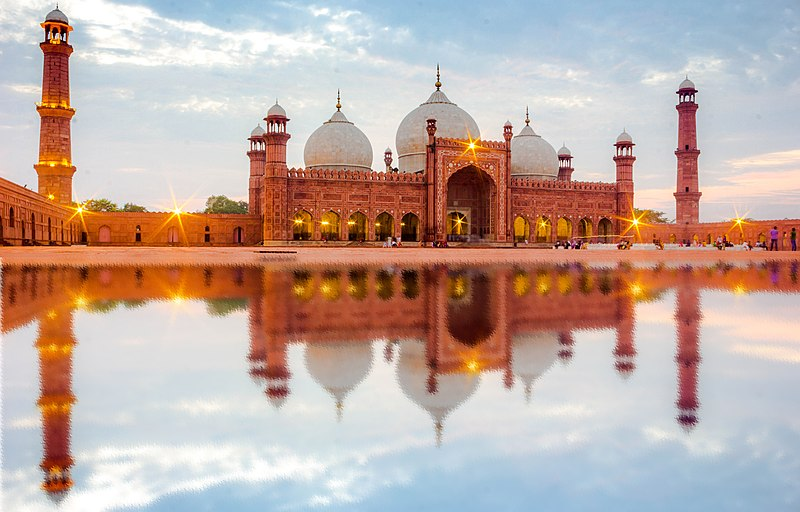
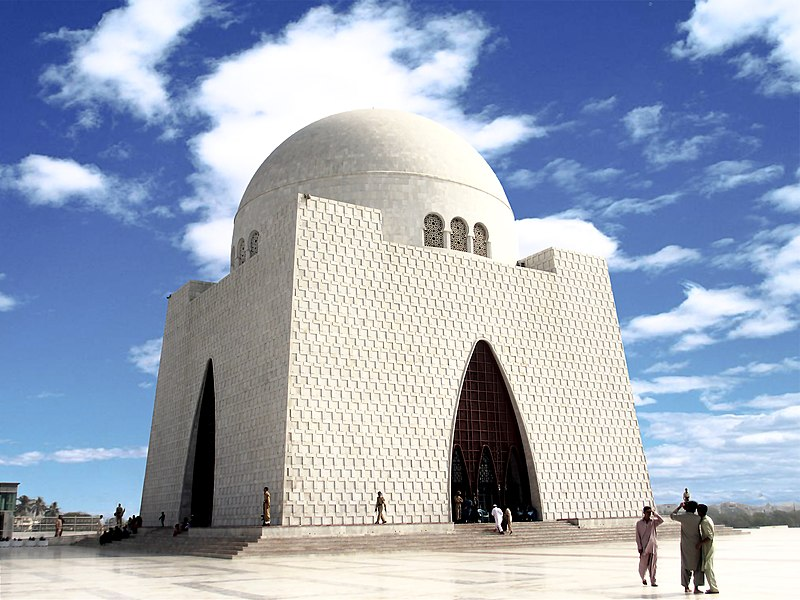

Provinces
Pakistan consists of four provinces — Punjab, Sindh, Balochistan, and Khyber Pakhtunkhwa. Balochistan is the largest by land area (about 44% of the country), while Punjab is the most populous, often called the land of five rivers. Each province is subdivided into divisions, which are further divided into districts, then tehsils (or talukas), and finally union councils.
Punjab
Punjab lies in eastern Pakistan, bordering India and Kashmir. It is the largest province by population and a major agricultural and industrial heartland. Fed by the Indus and its tributaries — Jhelum, Chenab, Ravi, and Sutlej — the province produces wheat, rice, cotton, sugarcane, fruits, vegetables, textiles, leather goods, sports goods, and machinery. Historically rich, Punjab hosted the Indus Valley Civilization and later saw the rule of Persian, Greek, Muslim, Sikh, and British powers.
Punjab’s cultural heritage includes the Lahore Fort, Badshahi Mosque, Shalimar Gardens, the Tomb of Jahangir, Noor Mahal, and Rohtas Fort. Lahore, the provincial capital, is widely considered Pakistan’s cultural and educational hub.
Sindh
Sindh lies in the southeast, bordered by Balochistan, Punjab, India, and the Arabian Sea. Its landscape features the Indus plains, the Thar Desert in the east, and the Kirthar Mountains in the west. Karachi, the capital, is Pakistan’s largest city and economic powerhouse. Sindh’s history traces back to the Indus Valley Civilization and later influences of the Achaemenids, Greeks, Mauryans, Indo-Greeks, Parthians, Kushans, Sassanids, Arabs, Mughals, and the British.
Today, Sindh is a vibrant province with a diverse population and economy, shaped by its ports, industries, agriculture, and trade networks.
Khyber Pakhtunkhwa

Khyber Pakhtunkhwa (KP/KPK) is located in the northwest, bordered by Balochistan, Punjab, Gilgit-Baltistan, Islamabad Capital Territory, Azad Kashmir, and Afghanistan. Its terrain ranges from rugged mountain ranges and valleys to fertile plains and agricultural lands. Peshawar, one of the region’s oldest cities, is the provincial capital.
The province has deep historical significance, once at the core of the Gandhara civilization and a stronghold of Buddhism, with sites such as the ruins of ancient Pushkalavati. Today, KP is renowned for natural beauty, including the Swat Valley.
Balochistan

Balochistan, in the southwest, is Pakistan’s largest province by area but least populated. It borders Khyber Pakhtunkhwa, Punjab, Sindh, Iran, Afghanistan, and the Arabian Sea. The province is an extensive plateau divided by rugged mountain ranges. It hosts the deep-sea Gwadar Port and significant natural resources, especially natural gas.
Although only a small portion of its land is arable, agriculture and livestock contribute heavily to the economy. Quetta is the provincial capital, while Gwadar is rapidly emerging as a strategic and economic hub.